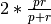

lingpy.evaluate package¶
Submodules¶
lingpy.evaluate.acd module¶
Evaluation methods for automatic cognate detection.
-
lingpy.evaluate.acd.bcubes(wordlist, gold='cogid', test='lexstatid', modify_ref=False, pprint=True, per_concept=False)¶ Compute B-Cubed scores for test and reference datasets.
- Parameters
lex :
lingpy.basic.wordlist.WordlistA
lingpy.basic.wordlist.Wordlistclass or a daughter class, (like theLexStatclass used for the computation). It should have two columns indicating cognate IDs.gold : str (default=’cogid’)
The name of the column containing the gold standard cognate assignments.
test : str (default=’lexstatid’)
The name of the column containing the automatically implemented cognate assignments.
modify_ref : function (default=False)
Use a function to modify the reference. If your cognate identifiers are numerical, for example, and negative values are assigned as loans, but you want to suppress this behaviour, just set this keyword to “abs”, and all cognate IDs will be converted to their absolute value.
pprint : bool (default=True)
Print out the results
per_concept : bool (default=False)
Compute b-cubed scores per concep and not for the whole data in one piece.
- Returns
t : tuple
A tuple consisting of the precision, the recall, and the harmonic mean (F-scores).
Notes
B-Cubed scores were first described by
Bagga1998as part of an algorithm. Later on,Amigo2009showed that they can also used as to compare cluster decisions.Hauer2011applied the B-Cubed scores first to the task of automatic cognate detection.
-
lingpy.evaluate.acd.diff(wordlist, gold='cogid', test='lexstatid', modify_ref=False, pprint=True, filename='', tofile=True, transcription='ipa', concepts=False)¶ Write differences in classifications on an item-basis to file.
- lex
lingpy.compare.lexstat.LexStat The
LexStatclass used for the computation. It should have two columns indicating cognate IDs.- goldstr (default=’cogid’)
The name of the column containing the gold standard cognate assignments.
- teststr (default=’lexstatid’)
The name of the column containing the automatically implemented cognate assignments.
- modify_reffunction (default=False)
Use a function to modify the reference. If your cognate identifiers are numerical, for example, and negative values are assigned as loans, but you want to suppress this behaviour, just set this keyword to “abs”, and all cognate IDs will be converted to their absolute value.
- pprintbool (default=True)
Print out the results
- filenamestr (default=’’)
Name of the output file. If not specified, it is identical with the name of the
LexStat, but with the extensiondiff.- tofilebool (default=True)
If set to c{False}, no data will be written to file, but instead, the data will be returned.
- transcriptionstr (default=”ipa”)
The file in which the transcriptions are located (should be a string, no segmentized version, for convenience of writing to file).
- Returns
t : tuple
A nested tuple consisting of two further tuples. The first containing precision, recall, and harmonic mean (F-scores), the second containing the same values for the pair-scores.
Notes
If the tofile option is chosen, the results are written to a specific file with the extension
diff. This file contains all cognate sets in which there are differences between gold standard and test sets. It also gives detailed information regarding false positives, false negatives, and the words involved in these wrong decisions.- lex
-
lingpy.evaluate.acd.extreme_cognates(wordlist, ref='extremeid', bias='lumper')¶ Return extreme cognates, either lump all words together or split them.
- Parameters
wordlist : ~lingpy.basic.wordlist.Wordlist
A ~lingpy.basic.wordlist.Wordlist object.
ref : str (default=”extremeid”)
The name of the table in your wordlist to which the new IDs should be written.
bias : str (default=”lumper”)
If set to “lumper”, all words with a certain meaning will be given the same cognate set ID, if set to “splitter”, all will be given a separate ID.
-
lingpy.evaluate.acd.npoint_ap(scores, cognates, reverse=False)¶ Calculate the n-point average precision.
- Parameters
scores : list
The scores of your algorithm for pairwise string comparison.
cognates : list
The cognate codings of the word pairs you compared. 1 indicates that the pair is cognate, 0 indicates that it is not cognate.
reverse : bool (default=False)
The order of your ranking mechanism. If your algorithm yields high scores for words which are probably cognate, and low scores for non-cognate words, you should set this keyword to “True”.
Notes
This follows the description in
Kondrak2002. The n-point average precision is useful to compare the discriminative force of different algorithms for string similarity, or to train the parameters of a given algorithm.Examples
>>> scores = [1, 2, 3, 4, 5] >>> cognates = [1, 1, 1, 0, 0] >>> from lingpy.evaluate.acd import npoint_ap >>> npoint_ap(scores, cognates) 1.0
-
lingpy.evaluate.acd.pairs(lex, gold='cogid', test='lexstatid', modify_ref=False, pprint=True, _return_string=False)¶ Compute pair scores for the evaluation of cognate detection algorithms.
- Parameters
lex :
lingpy.compare.lexstat.LexStatThe
LexStatclass used for the computation. It should have two columns indicating cognate IDs.gold : str (default=’cogid’)
The name of the column containing the gold standard cognate assignments.
test : str (default=’lexstatid’)
The name of the column containing the automatically implemented cognate assignments.
modify_ref : function (default=False)
Use a function to modify the reference. If your cognate identifiers are numerical, for example, and negative values are assigned as loans, but you want to suppress this behaviour, just set this keyword to “abs”, and all cognate IDs will be converted to their absolute value.
pprint : bool (default=True)
Print out the results
- Returns
t : tuple
A tuple consisting of the precision, the recall, and the harmonic mean (F-scores).
Notes
Pair-scores can be computed in different ways, with often different results. This variant follows the description by
Bouchard-Cote2013.
-
lingpy.evaluate.acd.partial_bcubes(wordlist, gold, test, pprint=True)¶ Compute B-Cubed scores for test and reference datasets for partial cognate detection.
- Parameters
wordlist :
Wordlistgold : str (default=’cogid’)
The name of the column containing the gold standard cognate assignments.
test : str (default=’lexstatid’)
The name of the column containing the automatically implemented cognate assignments.
pprint : bool (default=True)
Print out the results
- Returns
t : tuple
A tuple consisting of the precision, the recall, and the harmonic mean (F-scores).
Notes
B-Cubed scores were first described by
Bagga1998as part of an algorithm. Later on,Amigo2009showed that they can also used as to compare cluster decisions.Hauer2011applied the B-Cubed scores first to the task of automatic cognate detection.
-
lingpy.evaluate.acd.random_cognates(wordlist, ref='randomid', bias=False)¶ Populate a wordlist with random cognates for each entry.
- Parameters
ref : str (default=”randomid”)
Cognate set identifier for the newly created random cognate sets.
bias : str (default=False)
When set to “lumper” this will tend to create less cognate sets and larger clusters, when set to “splitter” it will tend to create smaller clusters.
Notes
When using this method for evaluation, you should be careful to overestimate the results. The function which creates the random clusters is based on simple functions for randomization and thus probably
lingpy.evaluate.alr module¶
Module provides methods for the evaluation of automatic linguistic reconstruction analyses.
-
lingpy.evaluate.alr.mean_edit_distance(wordlist, gold='proto', test='consensus', ref='cogid', tokens=True, classes=False, **keywords)¶ Function computes the edit distance between gold standard and test set.
- Parameters
wordlist : ~lingpy.basic.wordlist.Wordlist
The wordlist object containing the data for a given analysis.
gold : str (default=”proto”)
The name of the column containing the gold-standard solutions.
test = “consensus” :
The name of the column containing the test solutions.
stress : str (default=rcParams[‘stress’])
A string containing the stress symbols used in the sound-class conversion. Defaults to the stress as defined in ~lingpy.settings.rcParams.
diacritics : str (default=rcParams[‘diacritics’])
A string containing diacritic symbols used in the sound-class conversion. Defaults to the diacritic symbolds defined in ~lingpy.settings.rcParams.
cldf : bool (default=False)
If set to True, this will allow for a specific treatment of phonetic symbols which cannot be completely resolved (e.g., laryngeal h₂ in Indo-European). Following the CLDF specifications (in particular the specifications for writing transcriptions in segmented strings, as employed by the CLTS initiative), in cases of insecurity of pronunciation, users can adopt a
`source/target`style, where the source is the symbol used, e.g., in a reconstruction system, and the target is a proposed phonetic interpretation. This practice is also accepted by the EDICTOR tool.- Returns
dist : float
The mean edit distance between gold and test reconstructions.
Notes
This function has an alias (“med”). Calling it will produce the same results.
-
lingpy.evaluate.alr.med(wordlist, **keywords)¶
lingpy.evaluate.apa module¶
Basic module for the comparison of automatic phonetic alignments.
-
class
lingpy.evaluate.apa.EvalMSA(gold, test)¶ Bases:
lingpy.evaluate.apa.EvalBase class for the evaluation of automatic multiple sequence analyses.
- Parameters
gold, test :
MSAThe
Multipleobjects which shall be compared. The first object should be the gold standard and the second object should be the test set.
Notes
Most of the scores which can be calculated with help of this class are standard evaluation scores in evolutionary biology. For a close description on how these scores are calculated, see, for example,
Thompson1999,List2012, andRosenberg2009b.-
c_score(mode=1)¶ Calculate the column (C) score.
- Parameters
mode : { 1, 2, 3, 4 }
Indicate, which mode to compute. Select between:
divide the number of common columns in reference and test alignment by the total number of columns in the test alignment (the traditional C score described in
Thompson1999, also known as “precision” score in applications of information retrieval),divide the number of common columns in reference and test alignment by the total number of columns in the reference alignment (also known as “recall” score in applications of information retrieval),
divide the number of common columns in reference and test alignment by the average number of columns in reference and test alignment, or
combine the scores of mode
1and mode2by computing their F-score, using the formula , where p is the precision (mode1) and r is the recall (mode2).
- Returns
score : float
The C score for reference and test alignments.
Notes
The different c-
-
c_scores¶ Calculate the c-scores.
-
check_swaps()¶ Check for possibly identical swapped sites.
- Returns
swap : { -2, -1, 0, 1, 2 }
Information regarding the identity of swap decisions is coded by integers, whereas
- 1 – indicates that swaps are detected in both gold standard and
testset, whereas a negative value indicates that the positions are not identical,
- 2 – indicates that swap decisions are not identical in gold
standard and testset, whereas a negative value indicates that there is a false positive in the testset, and
- 0 – indicates that there are no swaps in the gold standard and the
testset.
-
jc_score()¶ Calculate the Jaccard (JC) score.
- Returns
score : float
The JC score.
See also
lingpy.test.evaluate.EvalPSA.jc_scoreNotes
The Jaccard score (see
List2012) is calculated by dividing the size of the intersection of residue pairs in reference and test alignment by the size of the union of residue pairs in reference and test alignment.
-
r_score()¶ Compute the rows (R) score.
- Returns
score : float
The PIR score.
Notes
The R score is the number of identical rows (sequences) in reference and test alignment divided by the total number of rows.
-
sp_score(mode=1)¶ Calculate the sum-of-pairs (SP) score.
- Parameters
mode : { 1, 2, 3 }
Indicate, which mode to compute. Select between:
divide the number of common residue pairs in reference and test alignment by the total number of residue pairs in the test alignment (the traditional SP score described in
Thompson1999, also known as “precision” score in applications of information retrieval),divide the number of common residue pairs in reference and test alignment by the total number of residue pairs in the reference alignment (also known as “recall” score in applications of information retrieval),
divide the number of common residue pairs in reference and test alignment by the average number of residue pairs in reference and test alignment.
- Returns
score : float
The SP score for gold standard and test alignments.
Notes
The SP score (see
Thompson1999) is calculated by dividing the number of identical residue pairs in reference and test alignment by the total number of residue pairs in the reference alignment.
-
class
lingpy.evaluate.apa.EvalPSA(gold, test)¶ Bases:
lingpy.evaluate.apa.EvalBase class for the evaluation of automatic pairwise sequence analyses.
- Parameters
gold, test :
lingpy.align.sca.PSAThe
Pairwiseobjects which shall be compared. The first object should be the gold standard and the second object should be the test set.
Notes
Moste of the scores which can be calculated with help of this class are standard evaluation scores in evolutionary biology. For a close description on how these scores are calculated, see, for example,
Thompson1999,List2012, andRosenberg2009b.-
c_score()¶ Calculate column (C) score.
- Returns
score : float
The C score for reference and test alignments.
Notes
The C score, as it is described in
Thompson1999, is calculated by dividing the number of columns which are identical in the gold standarad and the test alignment by the total number of columns in the test alignment.
-
diff(**keywords)¶ Write all differences between two sets to a file.
- Parameters
filename : str (default=’eval_psa_diff’)
Default
-
jc_score()¶ Calculate the Jaccard (JC) score.
- Returns
score : float
The JC score.
Notes
The Jaccard score (see
List2012) is calculated by dividing the size of the intersection of residue pairs in reference and test alignment by the size of the union of residue pairs in reference and test alignment.
-
pairwise_column_scores¶ Compute the different column scores for pairwise alignments. The method returns the precision, the recall score, and the f-score, following the proposal of Bergsma and Kondrak (2007), and the column score proposed by Thompson et al. (1999).
-
r_score(mode=1)¶ Compute the percentage of identical rows (PIR) score.
- Parameters
mode : { 1, 2 }
Select between mode
1, where all sequences are compared with each other, and mode2, where only whole alignments are compared.- Returns
score : float
The PIR score.
Notes
The PIR score is the number of identical rows (sequences) in reference and test alignment divided by the total number of rows.
-
sp_score()¶ Calculate the sum-of-pairs (SP) score.
- Returns
score : float
The SP score for reference and test alignments.
Notes
The SP score (see
Thompson1999) is calculated by dividing the number of identical residue pairs in reference and test alignment by the total number of residue pairs in the reference alignment.
Module contents¶
Basic module for the evaluation of algorithms.